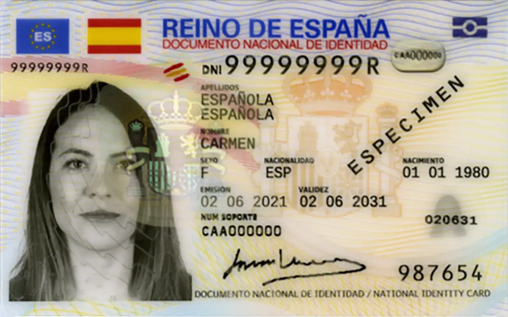
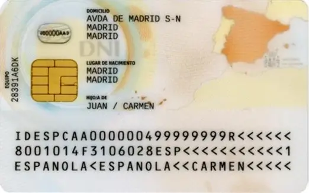
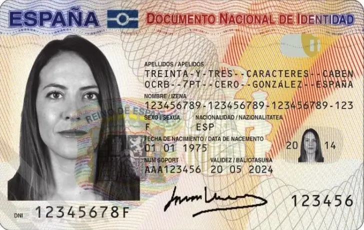
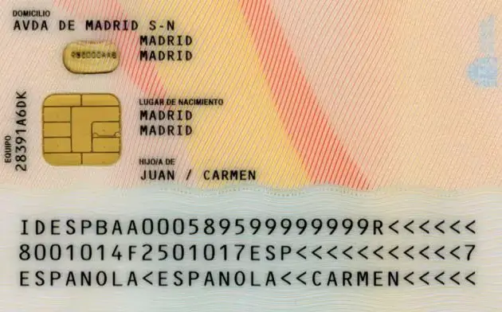
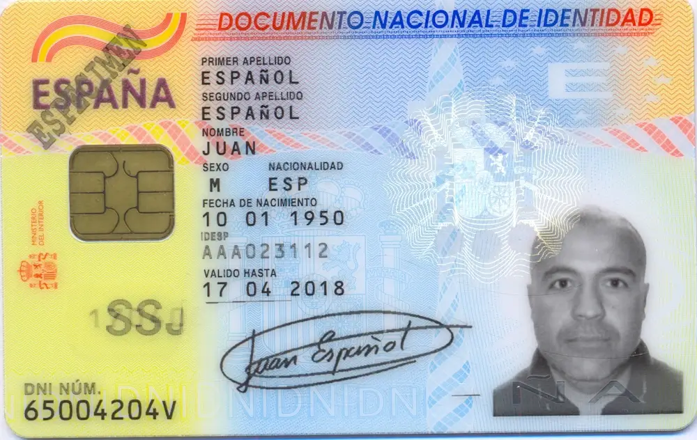
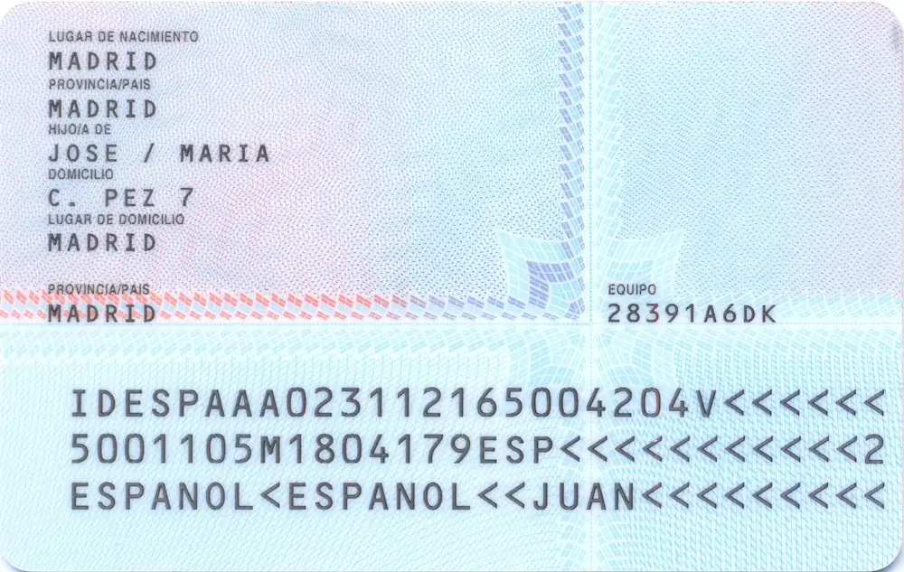

Protección del DNI
Pruebas para desarrollo con DNIs ejemplo






Foto
Tipo
Posición
Texto
Guardar
Foto
Tipo de foto
Elige si estás usando la foto delantera o trasera del DNI; puedes ajustar el tamaño y posición del DNI a continuación.
Posición
Ajusta la orientación y posición para que el DNI se vea correctamente.
Texto
Escribe un texto para añadir sobre la imagen.